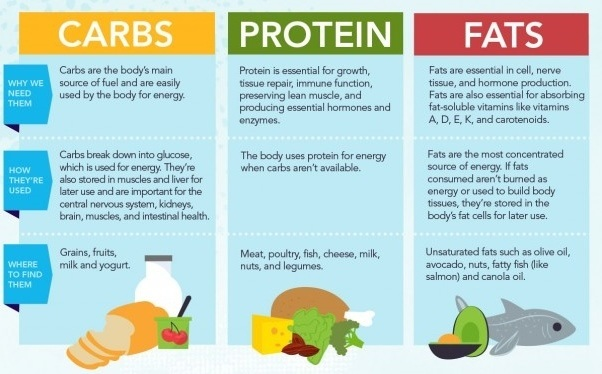

Common Misconceptions
I'm eating so healthy, but im still fat!
Carbs are so bad for you!
Oh my god! that has so much sugar im going to gain weight!
Wow thats really high in fat, thats bad for me!
Im hitting my abs everyday, but I still have no sixpack
Im sure you have heard people say a couple of these phrases before. If they say this unironically, they have no clue about what they are talking about. Dieting is very simple in planning, however it is the hardest to execute because of the consistency required over a long period of time. Reading this article will arm you will the knowledge required to get that summer six pack or that slim beach body.
Calories in, Calories out
"Abs are made in the kitchen"
This quote is nothing but correct. Your diet determines 70% of your progress whilst your work in the gym determines the other %30. Here is a pie chart to simplify this.

In saying your body composition is fully determined by the calories that go in and the calories that go out, NOT the type of food that you eat. It doesn't matter about if you consumer sugars or fats, it matters about the overall amount. In fact you can eat McDonalds and still get lean. Depending on your goals you either want to GAIN weight which requires eating more calories than you burn (calorie surplus) or LOSE weight which requires that you burn more calories than you eat (calorie deficit).
To calculate your maintenance calories simply get your weight in pounds and multiply it by 13 for example I am 170 pounds, so my maintanence would be calculated like this:
170 x 13 = 2210 Calories
This is a very rough estimate and their are more accurate methods of calculations. However, this should suffice for now.
Macronutrients
An understanding of macronutrients is important, so I have given you an inforgraphic below that explains the basics of Protein, Carbohydrates and Fats.
